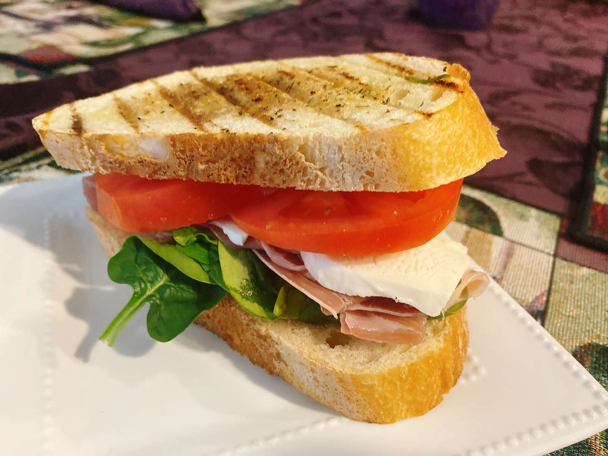

Italian BLT

Description
This sandwich is a nod to the classic BLT, with a touch of pesto and ricotta to bring an elevated touch.
If you want to savor the best of what Italy has to offer in America,try an italian grilled cheese BLT Sandwich.
Ingredients
- 1 loaf italian bread
- 1 tablespoon olive oil, or as needed
- 1 tablespoon italian seasoning
- 1 teaspoon garlic granules
- 2 cups spinach
- 1/3 cup fresh basil leaves
- 2 tomatoes, sliced
- 8 ounces fresh mozzarella cheese, sliced
- 12 ounces prosciutto
- 1/3 cup ricotta
- 1 tablespoon pesto
Steps
- Slice bread on the diagonal to get 12 slices.
- Brush each slice of bread with olive oil.
Mix Italian seasoning and garlic granules together;
sprinkle over bread slices.
- Heat a grill pan over medium-high heat,
and place bread oil-side-down on the pan
until grill marks form, about 3 minutes. Remove bread to a board.
- Mix spinach and basil leaves together. Divide leaves evenly over 6 slices of bread;
layer these 6 bread slices with equal amounts prosciutto,
sliced tomato, and sliced mozzarella.
- Stir pesto and ricotta together in a small bowl.
Spread a generous 1 tablespoon mixture onto remaining 6 bread slices,
and place on top of each sandwich.